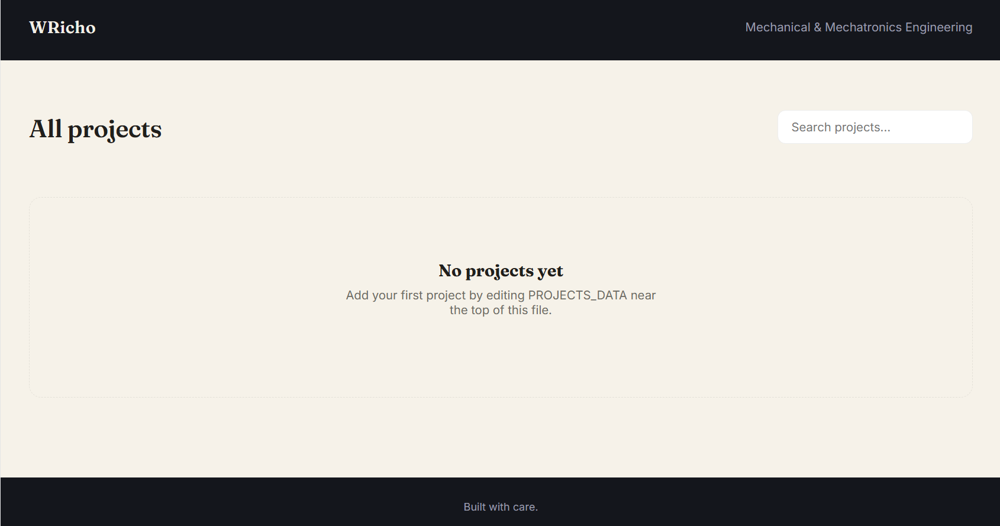

- Built with
- HTML, CSS, JavaScript
- Hosting
- GitHub Pages
- Build step
- None
Overview
I wanted to create a website to showcase my personal projects. The goal was to create a website that could function as an easy editable template for me and anyone who wanted to create a similar portfolio. I also wanted to experiment with AI since I tend not to use it in my main projects as it distracts from the learning, but I still want to practice using AI as a tool as it evolves. HTML and CSS I've learned and am familiar with so I thought it would be a good relatively unimportant project to collaborate with AI with.
Process
I Started using Claude Sonnet 4.6 and gave it the prompt of creating a website that could had buttons where you could enter the project if you were me, then have a public facing page. the original design was a binging with Babish inspired page were all the projects are arranged like how he arranges his recipes on his website. It created this were the buttons didn't work and you couldn't add anything.

Eventually I came to the conclusion that it would be better to use GitHub pages when I learnt how it worked so switched to that approach after I was more familiar with Git and how to commit to GitHub. By the time I got around to working on the website again Claude had released Sonnet 5.5. Even using it in 'low' settings it was able to create multiple html files for each page way better than 4.6 did where each page worked seamlessly.
Design
I gave it the new theme of a Designer Cutting Matt themed webpage and to take the tile format to present the projects. It was able to give me different swatch options which I picked, I asked to improve background from a grid to actual cutting matt shapes and remove rounded edges on tiles. I made it so the project pages are white with green borders, and tweaked the list to add a filter system in addition to search.
How it is organised
index.htmlis the home page: featured banner and project list.data/projects.jsis the list of projects shown on the home page.projects/holds one folder per project, each with its own page.css/style.cssholds all the styling, andcss/mat.svgis the background pattern.about/is the about page.
Adding a project
Copy projects/_template, rename the copy, write the page, then add an entry to data/projects.js with the same id. The README has the full steps.